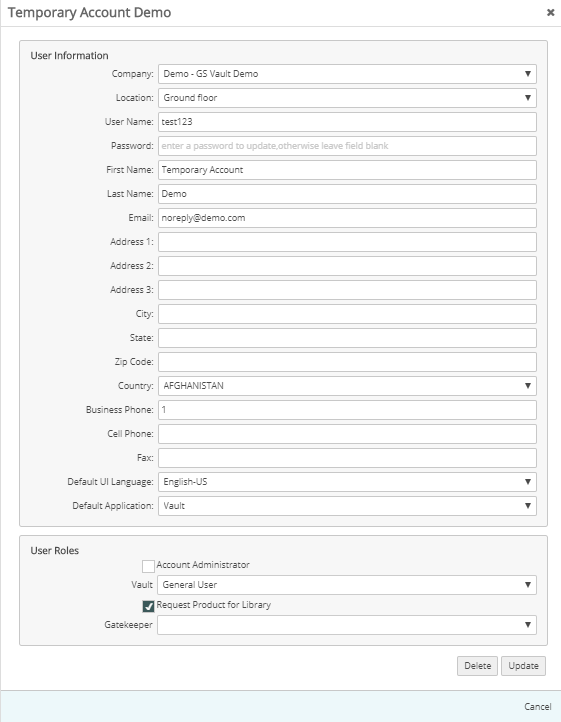
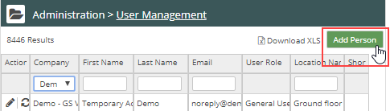
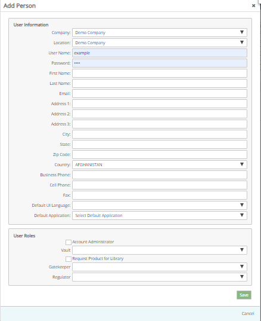

On the User Management page, click the Edit icon for the user (first column in the user table).

Edit the user fields as needed, then click Save.

To add a user:
On the User Management page, select Add a Person.

The user profile setup page is displayed.

Complete the information fields for the user.
Required fields: User Name, Password, First Name, Last Name, Email Address, Business Phone, Default Interface Language
Location: To set a default location for the user, select the location from the list.
Choose the role for the user for each product. If no role is selected, the user will not have access to that product.
See User Roles for details of the permissions granted for each user role.
Note: Gatekeeper and Regulator users must also have a Vault user role (at minimum General User).
Optionally, you may select the Default Application for the user. The default application is displayed when the user signs in.
To edit a user:
On the User Management page, click the Edit icon for the user (first column in the user table).
Edit the user fields as needed, then click Save.
